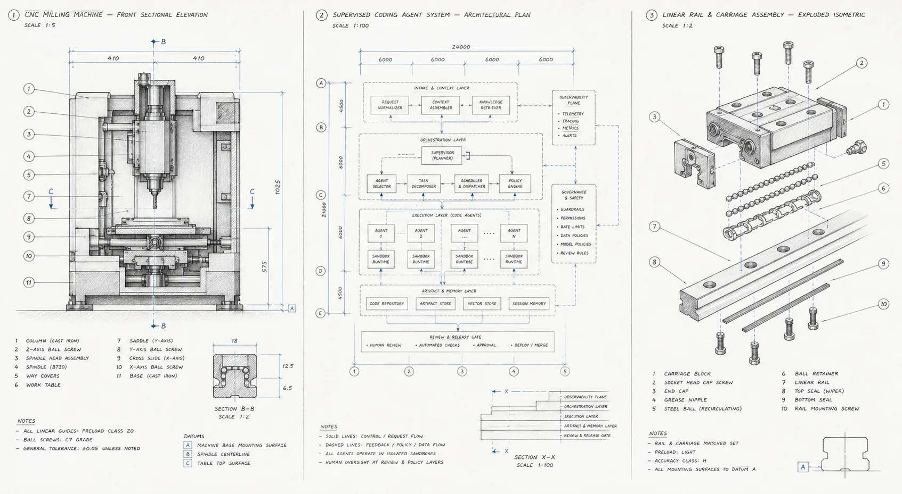

Require proof
A fresh reviewer reads every first pull request. When a person asks for changes or CI fails, the same ticket continues on the same pull request.
Assign the work. Get a pull request.
Mention the bot on an issue, type the work into a box, or send it from a coding session. Review the pull request on GitHub.

A single agent can write code. A reliable system also needs to define the work, review the result, handle failures, run checks, and keep a record of what happened.
A fresh reviewer reads every first pull request. When a person asks for changes or CI fails, the same ticket continues on the same pull request.
Claude Code and Codex run with their own subagents, in their own formats. Machinist does not route or translate them.
Every ticket records questions asked, feedback rounds, human commits, tokens and cost, so you can see how much help the work needed.
The agent decides how to do the work. Machinist keeps the record, starts the next run when something changes, and stops to ask when a person is needed.
Agents, reviewers and automations are plain files. Change the process by changing a playbook.
An agent that needs a decision asks where the work started. Your reply continues the same ticket.
Every run starts from a fresh clone of the ticket’s branch. A lost runner’s ticket continues on any other.
One agent run does the work, using subagents if you give it some. A fresh reviewer then comments on the pull request.
From an issue, the Assign box or MCP
An agent pushes a branch and opens one pull request
Reviews and CI failures continue the same ticket
@machinist-bot please fix thisAdd an automation file to run an agent on a schedule. The default agent never merges. A merge automation is opt-in, and GitHub refuses any merge that branch protection does not allow.
Assign your first ticketEvery merged pull request has a record. Change a playbook, then see whether the numbers move.
One control plane and any number of runners. A runner is a Mac, a VM, or a Kubernetes cluster that starts one gVisor Job per run. Runners dial out, so none needs an inbound route.
# A credential is the variables the harness already reads
control_plane = "http://10.0.0.5:7331"
slots = 2
[credentials.claude]
env = ["ANTHROPIC_API_KEY"]One Go binary contains the CLI, control plane, runner, SQLite history and browser interface. No Machinist cloud account is required.
Compile one local binary from the open-source repository.
Create the configuration, a starter factory and a runner token.
Set the bot and your repositories in config.toml, then start the control plane and a runner.
Start with a small issue that has a clear result. Mention the bot and wait for the pull request.